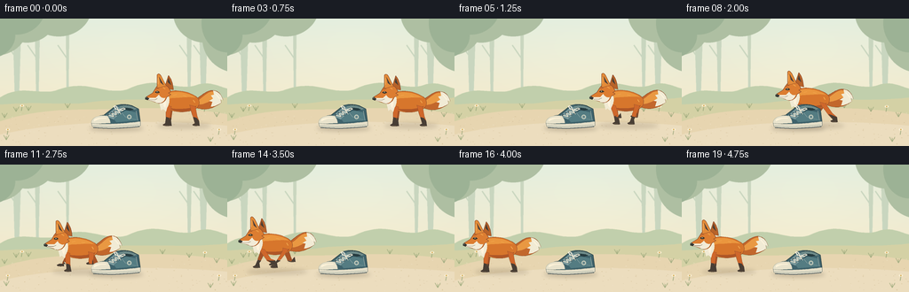
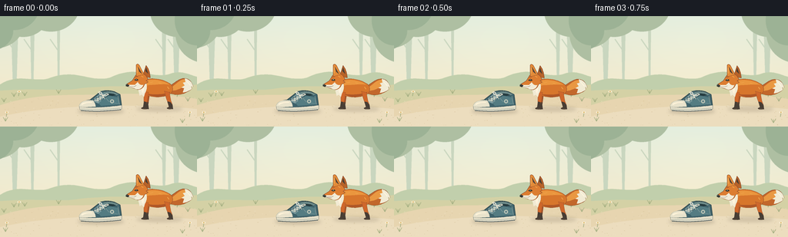

CODING AGENTS AS PIXEL WORLD MODELS
traex/GPT-6.1-Sol · dynamic_spatial_relationship_0029
点击播放 · 原生 RGB 像素
逐轮保存的候选
回放视频、检查图与代码变化。
每份候选均可单独播放。实际图片检查记录在下方工具轨迹中。
候选 01播放与检查图
点击播放 · 原生 RGB 像素


展开代码变化
--- 上一保存版本
+++ 本次保存版本
@@ -0,0 +1,196 @@
+from pathlib import Path
+import math
+import numpy as np
+from PIL import Image, ImageDraw, ImageFilter
+import artifact_io
+
+ROOT=Path(__file__).resolve().parent
+W,H,S=256,144,4
+rng=np.random.default_rng(12)
+
+def path(draw, commands, fill, outline=None, width=1):
+ pts=[]; cur=(0,0)
+ for c in commands:
+ if c[0]=='M' or c[0]=='L':
+ cur=(c[1],c[2]); pts.append(cur)
+ elif c[0]=='C':
+ a=np.array(cur);b=np.array(c[1:3]);cc=np.array(c[3:5]);d=np.array(c[5:7])
+ for t in np.linspace(0,1,18)[1:]:
+ q=(1-t)**3*a+3*(1-t)**2*t*b+3*(1-t)*t*t*cc+t**3*d;pts.append(tuple(q))
+ cur=tuple(d)
+ elif c[0]=='Q':
+ a=np.array(cur);b=np.array(c[1:3]);d=np.array(c[3:5])
+ for t in np.linspace(0,1,14)[1:]:pts.append(tuple((1-t)**2*a+2*(1-t)*t*b+t*t*d))
+ cur=tuple(d)
+ ps=[(round(x*S),round(y*S)) for x,y in pts]
+ draw.polygon(ps,fill=fill)
+ if outline:draw.line(ps+[ps[0]],fill=outline,width=max(1,int(S*width)),joint='curve')
+
+def ellipse(d,box,color):d.ellipse(tuple(round(v*S) for v in box),fill=color)
+def line(d,ps,color,width=1):d.line([(round(x*S),round(y*S)) for x,y in ps],fill=color,width=max(1,round(width*S)),joint='curve')
+
+# Warm, softly textured clearing, rendered with oversampling.
+yy,xx=np.mgrid[0:H*S,0:W*S]; yy=yy/S;xx=xx/S
+mix=np.clip(yy/115,0,1)[...,None]
+top=np.array([225,236,221]);bot=np.array([247,234,202])
+arr=top[None,None,:]*(1-mix)+bot[None,None,:]*mix
+light=np.exp(-((xx-144)**2/10000+(yy-40)**2/3600))[...,None]
+arr=arr+light*np.array([5,4,3])
+background=Image.fromarray(np.uint8(np.clip(arr,0,255)))
+d=ImageDraw.Draw(background)
+# Background trunks and leafy silhouettes kept low contrast.
+for x,wide in [(19,5),(42,3),(229,5),(213,3),(76,2)]:
+ path(d,[('M',x-wide,0),('L',x+wide,0),('L',x+wide*.45,91),('L',x-wide*.45,94)],'#c9d6bf')
+ line(d,[(x,46),(x-11,30)],'#c9d6bf',1.6)
+for x,y,rx,ry in [(-8,14,37,28),(30,-5,34,32),(66,-13,37,33),(231,-7,36,34),(268,23,40,38)]:
+ ellipse(d,(x-rx,y-ry,x+rx,y+ry),'#aebfa2')
+for x,y,rx,ry in [(-14,19,31,26),(18,-13,33,31),(256,5,29,33)]:
+ ellipse(d,(x-rx,y-ry,x+rx,y+ry),'#9cb295')
+path(d,[('M',0,89),('C',24,73,47,88,66,80),('C',99,68,118,87,143,80),('C',179,63,193,81,218,76),('C',237,69,246,77,256,79),('L',256,112),('L',0,112)],'#c1cfac')
+path(d,[('M',0,97),('C',49,93,78,99,104,94),('C',156,88,211,95,256,89),('L',256,144),('L',0,144)],'#d4d1a5')
+# Sweeping sand path across scene.
+path(d,[('M',0,116),('C',52,99,89,104,132,102),('C',175,100,217,101,256,108),('L',256,144),('L',0,144)],'#e7d5b0')
+path(d,[('M',0,131),('C',71,114,184,114,256,121),('L',256,144),('L',0,144)],'#ecddbe')
+# Fine fixed ground flecks and edge grasses.
+for _ in range(220):
+ x=float(rng.uniform(0,256));y=float(rng.uniform(106,144));r=float(rng.uniform(.15,.55))
+ ellipse(d,(x-r,y-r*.35,x+r,y+r*.35),tuple([int(v) for v in rng.choice([[212,192,151],[220,203,170],[238,225,198]])]))
+for x,y in [(5,112),(18,105),(32,104),(76,101),(183,101),(213,105),(244,111),(7,137),(237,139)]:
+ for dx in [-3,0,3]:line(d,[(x,y),(x+dx,y-4-abs(dx)*.4)],'#a0ac7f',.7)
+for x,y in [(24,104),(230,105),(8,131),(246,131)]:
+ line(d,[(x,y),(x+1,y-6)],'#94a376',.7)
+ ellipse(d,(x-1.4,y-7.1,x+2.9,y-4.4),'#faf0d6')
+ ellipse(d,(x+.1,y-6.5,x+1.5,y-5.1),'#d5ac55')
+background=background.filter(ImageFilter.GaussianBlur(.20*S))
+
+
+def shadow(im,x,y,rx,ry,opacity):
+ lay=Image.new('RGBA',im.size);d=ImageDraw.Draw(lay)
+ ellipse(d,(x-rx,y-ry,x+rx,y+ry),(85,64,43,opacity))
+ lay=lay.filter(ImageFilter.GaussianBlur(2.2*S))
+ im.alpha_composite(lay)
+
+# Detailed side-on canvas sneaker, fixed at the center of the clearing.
+def shoe(im):
+ d=ImageDraw.Draw(im)
+ path(d,[('M',104,119),('C',101,116,106,110,117,109),('L',131,98),('C',137,96,146,97,150,99),('L',156,102),('L',158,117),('C',152,121,115,123,104,119)],'#3e626b','#394f51',.75)
+ # Collar opening and padded rim.
+ path(d,[('M',134,99),('C',140,96,150,98,154,102),('L',146,104),('L',136,102)],'#263c40')
+ path(d,[('M',134,99),('C',140,97,149,98,154,102),('L',151,103),('C',147,100,139,100,136,102)],'#6d8a89')
+ path(d,[('M',119,110),('L',132,99),('L',138,103),('L',128,114)],'#7e9c9e')
+ path(d,[('M',128,113),('L',139,105),('C',143,103,148,105,153,106),('L',155,115),('L',131,117)],'#547c82')
+ line(d,[(137,106),(141,111),(153,114)],'#88a0a0',.6)
+ line(d,[(153,104),(155,115)],'#a7b4ac',.6)
+ # Rounded ivory toe cap.
+ path(d,[('M',105,113),('C',109,109,116,109,121,110),('C',122,112,124,114,124,118),('L',104,119),('C',102,118,103,115,105,113)],'#e9e3cc','#bbbca9',.6)
+ path(d,[('M',106,114),('C',109,112,115,112,119,112),('L',120,113),('C',114,112,109,114,106,116)],'#fff3d9')
+ # Rubber foxing strip.
+ path(d,[('M',103,118),('C',118,120,143,118,158,116),('L',158,121),('C',146,125,115,125,104,122)],'#e5dfc9','#7c857b',.65)
+ line(d,[(105,121),(124,122),(144,121),(156,120)],'#9caa9e',.65)
+ line(d,[(105,123),(126,124),(147,122.8),(157,121.7)],'#46565a',.9)
+ # Cream criss-cross laces and eyelets.
+ for k in range(4):
+ x=122+k*3.3;y=109-k*2.1
+ ellipse(d,(x-.9,y-.9,x+.9,y+.9),'#263f47')
+ ellipse(d,(x+5.5,y+.8,x+7,y+2.3),'#253e43')
+ line(d,[(x,y),(x+6.3,y+1.4)],'#f1ead4',1)
+ if k<3:line(d,[(x+6.3,y+1.4),(x+3.3,y-2.1)],'#dedcca',.8)
+ line(d,[(133,103),(131,99),(128,99),(130,102),(134,103),(139,101),(141,102),(137,104)],'#f5edda',.9)
+ line(d,[(134,104),(136,108)],'#eee6d0',.8)
+ # Subtle stitched side emblem, not text.
+ ellipse(d,(143,108.5,148,113.5),'#bec7b8')
+ ellipse(d,(144.2,109.7,146.8,112.3),'#638489')
+
+
+def fox(im,center,phase,running,frame):
+ # Draw locally then position: all limbs and fur are coherent geometry.
+ layer=Image.new('RGBA',(W*S,H*S));d=ImageDraw.Draw(layer)
+ bob=(-1.5-2.2*math.sin(phase*2)) if running else .35*math.sin(frame*.5)
+ scale=.90; ox=center;oy=120+bob
+ def P(cmds,fill,outline=None,width=.7):
+ out=[]
+ for c in cmds:
+ vals=[]
+ for j,v in enumerate(c[1:]):vals.append((ox if j%2==0 else oy)+v*scale)
+ out.append((c[0],*vals))
+ path(d,out,fill,outline,width*scale)
+ def E(box,c):ellipse(d,(ox+box[0]*scale,oy+box[1]*scale,ox+box[2]*scale,oy+box[3]*scale),c)
+ def L(ps,c,w=.7):line(d,[(ox+x*scale,oy+y*scale) for x,y in ps],c,w*scale)
+ # Legs drawn as tapering articulated shapes; staggered trot/gallop.
+ def leg(hip,side,offset):
+ hx,hy=hip
+ if running:
+ a=math.sin(phase+offset);b=math.cos(phase+offset)
+ knee=(hx+9*a,hy+12)
+ foot=(hx+15*a,-1-max(0,b)*9)
+ else:
+ knee=(hx+(3 if hx>0 else -1),-11)
+ foot=(hx+(5 if hx>0 else -2),0)
+ kx,ky=knee;fx,fy=foot
+ col='#a65327' if side else '#cf672b'
+ P([('M',hx-3.7,hy-2),('C',hx-2,hy+4,kx-3.2,ky-1,kx-2,ky+2),('L',fx-2,fy-2),('L',fx-5,fy-.5),('Q',fx-5,fy+2,fx+4,fy+1),('L',fx+3,fy-5),('L',kx+3,ky),('L',hx+3.6,hy)],col,'#8a4d2b',.5)
+ P([('M',kx-2,ky+1),('L',fx-2,fy-2),('L',fx-5,fy-.4),('Q',fx-5,fy+2,fx+4,fy+1),('L',fx+3,fy-5),('L',kx+2,ky+2)],'#483e35')
+ L([(fx-3,fy+.5),(fx+2,fy+.5)],'#6b5a46',.5)
+ leg((13,-22),True,math.pi)
+ leg((-15,-23),True,0)
+ # Large plush tail, trailing to the right with white tip.
+ tw=2.3*math.sin(phase) if running else 1*math.sin(frame*.5)
+ tail=[('M',11,-30),('C',23,-33,30,-46+tw,41,-43+tw),('C',47,-42+tw,50,-35+tw,51,-31+tw),('L',48,-32+tw),('L',49,-28+tw),('C',36,-17+tw,22,-18,13,-24)]
+ P(tail,'#c2672c','#884a29',.7)
+ P([('M',18,-29),('C',29,-37,34,-44+tw,41,-41+tw),('C',44,-40+tw,45,-37+tw,45,-34+tw),('C',34,-31,28,-24,18,-26)],'#e99842')
+ P([('M',39,-43+tw),('C',47,-42+tw,50,-35+tw,51,-31+tw),('L',48,-32+tw),('L',49,-28+tw),('C',45,-25+tw,40,-23+tw,36,-23+tw),('L',38,-29+tw),('L',34,-30+tw),('L',39,-33+tw),('L',36,-37+tw),('L',40,-38+tw)],'#f1ebd5')
+ L([(42,-39+tw),(47,-33+tw)],'#fff6de',.8)
+ # Orange torso with smoothly layered flank shading.
+ P([('M',-23,-39),('C',-13,-46,7,-43,17,-36),('C',24,-31,22,-22,15,-19),('C',3,-14,-12,-16,-21,-21),('C',-27,-26,-27,-34,-23,-39)],'#d7762c','#94512c',.75)
+ P([('M',-21,-38),('C',-11,-44,8,-41,17,-34),('C',10,-36,-1,-34,-10,-34),('C',-17,-34,-19,-30,-22,-27)],'#ea963e')
+ P([('M',-16,-21),('C',-3,-19,9,-20,18,-24),('C',16,-17,-4,-13,-16,-21)],'#af5727')
+ leg((13,-23),False,.65)
+ leg((-17,-23),False,math.pi+.65)
+ # White throat/bib, slightly jagged edge for soft fur.
+ P([('M',-28,-41),('L',-17,-36),('C',-15,-32,-16,-26,-19,-21),('L',-20,-17),('L',-24,-20),('L',-26,-18),('L',-28,-26),('L',-30,-29)],'#f1ead3')
+ P([('M',-27,-38),('L',-24,-35),('L',-23,-24),('L',-21,-21),('L',-20,-27),('L',-20,-34)],'#fff3dc')
+ # Far ear and neck.
+ P([('M',-22,-46),('L',-17,-62),('Q',-12,-56,-11,-44)],'#b86329','#85452c')
+ P([('M',-18,-54),('L',-17,-59),('L',-14,-50)],'#493e34')
+ # Pointed fox head, long dark muzzle, near pointed ear.
+ P([('M',-17,-47),('C',-22,-52,-30,-52,-34,-45),('L',-37,-40),('L',-45,-35),('Q',-46,-32,-41,-31),('L',-32,-28),('C',-25,-25,-20,-31,-19,-35),('L',-14,-38),('L',-17,-40),('L',-14,-42)],'#dc7d31','#8a4b2c',.65)
+ P([('M',-31,-46),('L',-31,-63),('Q',-29,-66,-26,-61),('L',-20,-49)],'#e38b38','#8a4b2c',.7)
+ P([('M',-28.5,-60),('L',-27,-53),('L',-23,-50)],'#4e4038')
+ L([(-30,-59),(-30,-51)],'#f2b15d',.75)
+ P([('M',-43,-34),('L',-33,-34),('L',-29,-38),('C',-27,-34,-23,-33,-21,-34),('C',-23,-27,-30,-26,-34,-29),('L',-42,-31)],'#f2ebd7')
+ P([('M',-44,-35),('Q',-47,-35,-46,-32),('L',-43,-31),('L',-41,-33)],'#343733')
+ E((-45.4,-34.5,-44.2,-33.8),'#848678')
+ L([(-41,-31.5),(-34,-31.7),(-31,-33)],'#6a5944',.65)
+ # Bright, attentive almond eye and brow.
+ P([('M',-34,-41),('Q',-31,-44,-28,-41),('Q',-31,-38.8,-34,-41)],'#332f29',None)
+ E((-31.5,-42.0,-29.9,-40.2),'#b99446')
+ E((-31,-41.9,-30.2,-40.0),'#242b26')
+ E((-31.7,-42.0,-30.8,-41.1),'#fff4d9')
+ L([(-33,-45),(-29,-46)],'#a1512a',.7)
+ # Sparse fine fur markings on shoulder and flank.
+ for pts in [[(-11,-37),(-7,-38)],[(1,-37),(5,-36)],[(14,-31),(16,-28)],[(-24,-47),(-21,-45)]]:
+ L(pts,'#f1a64d',.7)
+ im.alpha_composite(layer)
+
+frames=[]
+for i in range(20):
+ # Establish right, then a brisk traverse, then establish left.
+ if i<=3:
+ x=205.;running=False
+ elif i<=15:
+ u=(i-3)/12
+ smooth=u*u*(3-2*u)
+ x=205-154*smooth;running=True
+ else:
+ x=51.;running=False
+ phase=(i-3)*1.48
+ im=background.convert('RGBA')
+ shadow(im,131,124,30,3,54)
+ shadow(im,x+2,121,30 if not running else 34,3,43)
+ fox(im,x,phase,running,i)
+ # Shoe is a little nearer to the viewer, so the fox passes behind it.
+ shoe(im)
+ rgb=im.convert('RGB').resize((W,H),Image.Resampling.LANCZOS)
+ frames.append(np.array(rgb,dtype=np.uint8))
+artifact_io.save(np.stack(frames),ROOT)
+print('Saved 20 RGB frames, 256x144 at 4 fps.')
可观测工具轨迹
实际执行的命令与返回图片。
命令 1exit 0
/bin/bash -lc "ls -la && cat prompt.txt && printf '\\n---RULES---\\n' && cat GENERATION_RULES.md && printf '\\n---SPEC---\\n' && cat task_spec.json"
命令 2exit 0
/bin/bash -lc "cat artifact_io.py && printf '\\n---TOOLS---\\n' && python - <<'PY' import importlib.util for m in ['numpy','PIL','cv2']: print(m, bool(importlib.util.find_spec(m))) PY"
命令 3exit 0
/bin/bash -lc "cat > generate.py <<'PY'
from pathlib import Path
import math
import numpy as np
from PIL import Image, ImageDraw, ImageFilter
import artifact_io
ROOT=Path(__file__).resolve().parent
W,H,S=256,144,4
rng=np.random.default_rng(12)
def path(draw, commands, fill, outline=None, width=1):
pts=[]; cur=(0,0)
for c in commands:
if c[0]=='M' or c[0]=='L':
cur=(c[1],c[2]); pts.append(cur)
elif c[0]=='C':
a=np.array(cur);b=np.array(c[1:3]);cc=np.array(c[3:5]);d=np.array(c[5:7])
for t in np.linspace(0,1,18)[1:]:
q=(1-t)**3*a+3*(1-t)**2*t*b+3*(1-t)*t*t*cc+t**3*d;pts.append(tuple(q))
cur=tuple(d)
elif c[0]=='Q':
a=np.array(cur);b=np.array(c[1:3]);d=np.array(c[3:5])
for t in np.linspace(0,1,14)[1:]:pts.append(tuple((1-t)**2*a+2*(1-t)*t*b+t*t*d))
cur=tuple(d)
ps=[(round(x*S),round(y*S)) for x,y in pts]
draw.polygon(ps,fill=fill)
if outline:draw.line(ps+[ps[0]],fill=outline,width=max(1,int(S*width)),joint='curve')
def ellipse(d,box,color):d.ellipse(tuple(round(v*S) for v in box),fill=color)
def line(d,ps,color,width=1):d.line([(round(x*S),round(y*S)) for x,y in ps],fill=color,width=max(1,round(width*S)),joint='curve')
# Warm, softly textured clearing, rendered with oversampling.
yy,xx=np.mgrid[0:H*S,0:W*S]; yy=yy/S;xx=xx/S
mix=np.clip(yy/115,0,1)[...,None]
top=np.array([225,236,221]);bot=np.array([247,234,202])
arr=top[None,None,:]*(1-mix)+bot[None,None,:]*mix
light=np.exp(-((xx-144)**2/10000+(yy-40)**2/3600))[...,None]
arr=arr+light*np.array([5,4,3])
background=Image.fromarray(np.uint8(np.clip(arr,0,255)))
d=ImageDraw.Draw(background)
# Background trunks and leafy silhouettes kept low contrast.
for x,wide in [(19,5),(42,3),(229,5),(213,3),(76,2)]:
path(d,[('M',x-wide,0),('L',x+wide,0),('L',x+wide*.45,91),('L',x-wide*.45,94)],'#c9d6bf')
line(d,[(x,46),(x-11,30)],'#c9d6bf',1.6)
for x,y,rx,ry in [(-8,14,37,28),(30,-5,34,32),(66,-13,37,33),(231,-7,36,34),(268,23,40,38)]:
ellipse(d,(x-rx,y-ry,x+rx,y+ry),'#aebfa2')
for x,y,rx,ry in [(-14,19,31,26),(18,-13,33,31),(256,5,29,33)]:
ellipse(d,(x-rx,y-ry,x+rx,y+ry),'#9cb295')
path(d,[('M',0,89),('C',24,73,47,88,66,80),('C',99,68,118,87,143,80),('C',179,63,193,81,218,76),('C',237,69,246,77,256,79),('L',256,112),('L',0,112)],'#c1cfac')
path(d,[('M',0,97),('C',49,93,78,99,104,94),('C',156,88,211,95,256,89),('L',256,144),('L',0,144)],'#d4d1a5')
# Sweeping sand path across scene.
path(d,[('M',0,116),('C',52,99,89,104,132,102),('C',175,100,217,101,256,108),('L',256,144),('L',0,144)],'#e7d5b0')
path(d,[('M',0,131),('C',71,114,184,114,256,121),('L',256,144),('L',0,144)],'#ecddbe')
# Fine fixed ground flecks and edge grasses.
for _ in range(220):
x=float(rng.uniform(0,256));y=float(rng.uniform(106,144));r=float(rng.uniform(.15,.55))
ellipse(d,(x-r,y-r*.35,x+r,y+r*.35),tuple([int(v) for v in rng.choice([[212,192,151],[220,203,170],[238,225,198]])]))
for x,y in [(5,112),(18,105),(32,104),(76,101),(183,101),(213,105),(244,111),(7,137),(237,139)]:
for dx in [-3,0,3]:line(d,[(x,y),(x+dx,y-4-abs(dx)*.4)],'#a0ac7f',.7)
for x,y in [(24,104),(230,105),(8,131),(246,131)]:
line(d,[(x,y),(x+1,y-6)],'#94a376',.7)
ellipse(d,(x-1.4,y-7.1,x+2.9,y-4.4),'#faf0d6')
ellipse(d,(x+.1,y-6.5,x+1.5,y-5.1),'#d5ac55')
background=background.filter(ImageFilter.GaussianBlur(.20*S))
def shadow(im,x,y,rx,ry,opacity):
lay=Image.new('RGBA',im.size);d=ImageDraw.Draw(lay)
ellipse(d,(x-rx,y-ry,x+rx,y+ry),(85,64,43,opacity))
lay=lay.filter(ImageFilter.GaussianBlur(2.2*S))
im.alpha_composite(lay)
# Detailed side-on canvas sneaker, fixed at the center of the clearing.
def shoe(im):
d=ImageDraw.Draw(im)
path(d,[('M',104,119),('C',101,116,106,110,117,109),('L',131,98),('C',137,96,146,97,150,99),('L',156,102),('L',158,117),('C',152,121,115,123,104,119)],'#3e626b','#394f51',.75)
# Collar opening and padded rim.
path(d,[('M',134,99),('C',140,96,150,98,154,102),('L',146,104),('L',136,102)],'#263c40')
path(d,[('M',134,99),('C',140,97,149,98,154,102),('L',151,103),('C',147,100,139,100,136,102)],'#6d8a89')
path(d,[('M',119,110),('L',132,99),('L',138,103),('L',128,114)],'#7e9c9e')
path(d,[('M',128,113),('L',139,105),('C',143,103,148,105,153,106),('L',155,115),('L',131,117)],'#547c82')
line(d,[(137,106),(141,111),(153,114)],'#88a0a0',.6)
line(d,[(153,104),(155,115)],'#a7b4ac',.6)
# Rounded ivory toe cap.
path(d,[('M',105,113),('C',109,109,116,109,121,110),('C',122,112,124,114,124,118),('L',104,119),('C',102,118,103,115,105,113)],'#e9e3cc','#bbbca9',.6)
path(d,[('M',106,114),('C',109,112,115,112,119,112),('L',120,113),('C',114,112,109,114,106,116)],'#fff3d9')
# Rubber foxing strip.
path(d,[('M',103,118),('C',118,120,143,118,158,116),('L',158,121),('C',146,125,115,125,104,122)],'#e5dfc9','#7c857b',.65)
line(d,[(105,121),(124,122),(144,121),(156,120)],'#9caa9e',.65)
line(d,[(105,123),(126,124),(147,122.8),(157,121.7)],'#46565a',.9)
# Cream criss-cross laces and eyelets.
for k in range(4):
x=122+k*3.3;y=109-k*2.1
ellipse(d,(x-.9,y-.9,x+.9,y+.9),'#263f47')
ellipse(d,(x+5.5,y+.8,x+7,y+2.3),'#253e43')
line(d,[(x,y),(x+6.3,y+1.4)],'#f1ead4',1)
if k<3:line(d,[(x+6.3,y+1.4),(x+3.3,y-2.1)],'#dedcca',.8)
line(d,[(133,103),(131,99),(128,99),(130,102),(134,103),(139,101),(141,102),(137,104)],'#f5edda',.9)
line(d,[(134,104),(136,108)],'#eee6d0',.8)
# Subtle stitched side emblem, not text.
ellipse(d,(143,108.5,148,113.5),'#bec7b8')
ellipse(d,(144.2,109.7,146.8,112.3),'#638489')
def fox(im,center,phase,running,frame):
# Draw locally then position: all limbs and fur are coherent geometry.
layer=Image.new('RGBA',(W*S,H*S));d=ImageDraw.Draw(layer)
bob=(-1.5-2.2*math.sin(phase*2)) if running else .35*math.sin(frame*.5)
scale=.90; ox=center;oy=120+bob
def P(cmds,fill,outline=None,width=.7):
out=[]
for c in cmds:
vals=[]
for j,v in enumerate(c[1:]):vals.append((ox if j%2==0 else oy)+v*scale)
out.append((c[0],*vals))
path(d,out,fill,outline,width*scale)
def E(box,c):ellipse(d,(ox+box[0]*scale,oy+box[1]*scale,ox+box[2]*scale,oy+box[3]*scale),c)
def L(ps,c,w=.7):line(d,[(ox+x*scale,oy+y*scale) for x,y in ps],c,w*scale)
# Legs drawn as tapering articulated shapes; staggered trot/gallop.
def leg(hip,side,offset):
hx,hy=hip
if running:
a=math.sin(phase+offset);b=math.cos(phase+offset)
knee=(hx+9*a,hy+12)
foot=(hx+15*a,-1-max(0,b)*9)
else:
knee=(hx+(3 if hx>0 else -1),-11)
foot=(hx+(5 if hx>0 else -2),0)
kx,ky=knee;fx,fy=foot
col='#a65327' if side else '#cf672b'
P([('M',hx-3.7,hy-2),('C',hx-2,hy+4,kx-3.2,ky-1,kx-2,ky+2),('L',fx-2,fy-2),('L',fx-5,fy-.5),('Q',fx-5,fy+2,fx+4,fy+1),('L',fx+3,fy-5),('L',kx+3,ky),('L',hx+3.6,hy)],col,'#8a4d2b',.5)
P([('M',kx-2,ky+1),('L',fx-2,fy-2),('L',fx-5,fy-.4),('Q',fx-5,fy+2,fx+4,fy+1),('L',fx+3,fy-5),('L',kx+2,ky+2)],'#483e35')
L([(fx-3,fy+.5),(fx+2,fy+.5)],'#6b5a46',.5)
leg((13,-22),True,math.pi)
leg((-15,-23),True,0)
# Large plush tail, trailing to the right with white tip.
tw=2.3*math.sin(phase) if running else 1*math.sin(frame*.5)
tail=[('M',11,-30),('C',23,-33,30,-46+tw,41,-43+tw),('C',47,-42+tw,50,-35+tw,51,-31+tw),('L',48,-32+tw),('L',49,-28+tw),('C',36,-17+tw,22,-18,13,-24)]
P(tail,'#c2672c','#884a29',.7)
P([('M',18,-29),('C',29,-37,34,-44+tw,41,-41+tw),('C',44,-40+tw,45,-37+tw,45,-34+tw),('C',34,-31,28,-24,18,-26)],'#e99842')
P([('M',39,-43+tw),('C',47,-42+tw,50,-35+tw,51,-31+tw),('L',48,-32+tw),('L',49,-28+tw),('C',45,-25+tw,40,-23+tw,36,-23+tw),('L',38,-29+tw),('L',34,-30+tw),('L',39,-33+tw),('L',36,-37+tw),('L',40,-38+tw)],'#f1ebd5')
L([(42,-39+tw),(47,-33+tw)],'#fff6de',.8)
# Orange torso with smoothly layered flank shading.
P([('M',-23,-39),('C',-13,-46,7,-43,17,-36),('C',24,-31,22,-22,15,-19),('C',3,-14,-12,-16,-21,-21),('C',-27,-26,-27,-34,-23,-39)],'#d7762c','#94512c',.75)
P([('M',-21,-38),('C',-11,-44,8,-41,17,-34),('C',10,-36,-1,-34,-10,-34),('C',-17,-34,-19,-30,-22,-27)],'#ea963e')
P([('M',-16,-21),('C',-3,-19,9,-20,18,-24),('C',16,-17,-4,-13,-16,-21)],'#af5727')
leg((13,-23),False,.65)
leg((-17,-23),False,math.pi+.65)
# White throat/bib, slightly jagged edge for soft fur.
P([('M',-28,-41),('L',-17,-36),('C',-15,-32,-16,-26,-19,-21),('L',-20,-17),('L',-24,-20),('L',-26,-18),('L',-28,-26),('L',-30,-29)],'#f1ead3')
P([('M',-27,-38),('L',-24,-35),('L',-23,-24),('L',-21,-21),('L',-20,-27),('L',-20,-34)],'#fff3dc')
# Far ear and neck.
P([('M',-22,-46),('L',-17,-62),('Q',-12,-56,-11,-44)],'#b86329','#85452c')
P([('M',-18,-54),('L',-17,-59),('L',-14,-50)],'#493e34')
# Pointed fox head, long dark muzzle, near pointed ear.
P([('M',-17,-47),('C',-22,-52,-30,-52,-34,-45),('L',-37,-40),('L',-45,-35),('Q',-46,-32,-41,-31),('L',-32,-28),('C',-25,-25,-20,-31,-19,-35),('L',-14,-38),('L',-17,-40),('L',-14,-42)],'#dc7d31','#8a4b2c',.65)
P([('M',-31,-46),('L',-31,-63),('Q',-29,-66,-26,-61),('L',-20,-49)],'#e38b38','#8a4b2c',.7)
P([('M',-28.5,-60),('L',-27,-53),('L',-23,-50)],'#4e4038')
L([(-30,-59),(-30,-51)],'#f2b15d',.75)
P([('M',-43,-34),('L',-33,-34),('L',-29,-38),('C',-27,-34,-23,-33,-21,-34),('C',-23,-27,-30,-26,-34,-29),('L',-42,-31)],'#f2ebd7')
P([('M',-44,-35),('Q',-47,-35,-46,-32),('L',-43,-31),('L',-41,-33)],'#343733')
E((-45.4,-34.5,-44.2,-33.8),'#848678')
L([(-41,-31.5),(-34,-31.7),(-31,-33)],'#6a5944',.65)
# Bright, attentive almond eye and brow.
P([('M',-34,-41),('Q',-31,-44,-28,-41),('Q',-31,-38.8,-34,-41)],'#332f29',None)
E((-31.5,-42.0,-29.9,-40.2),'#b99446')
E((-31,-41.9,-30.2,-40.0),'#242b26')
E((-31.7,-42.0,-30.8,-41.1),'#fff4d9')
L([(-33,-45),(-29,-46)],'#a1512a',.7)
# Sparse fine fur markings on shoulder and flank.
for pts in [[(-11,-37),(-7,-38)],[(1,-37),(5,-36)],[(14,-31),(16,-28)],[(-24,-47),(-21,-45)]]:
L(pts,'#f1a64d',.7)
im.alpha_composite(layer)
frames=[]
for i in range(20):
# Establish right, then a brisk traverse, then establish left.
if i<=3:
x=205.;running=False
elif i<=15:
u=(i-3)/12
smooth=u*u*(3-2*u)
x=205-154*smooth;running=True
else:
x=51.;running=False
phase=(i-3)*1.48
im=background.convert('RGBA')
shadow(im,131,124,30,3,54)
shadow(im,x+2,121,30 if not running else 34,3,43)
fox(im,x,phase,running,i)
# Shoe is a little nearer to the viewer, so the fox passes behind it.
shoe(im)
rgb=im.convert('RGB').resize((W,H),Image.Resampling.LANCZOS)
frames.append(np.array(rgb,dtype=np.uint8))
artifact_io.save(np.stack(frames),ROOT)
print('Saved 20 RGB frames, 256x144 at 4 fps.')
PY
python generate.py"视觉工具实际返回图片 1

保存候选 1 份；完成命令 3 次；可验证图片返回 1 张。原始 API 响应与完整日志保留在本地。